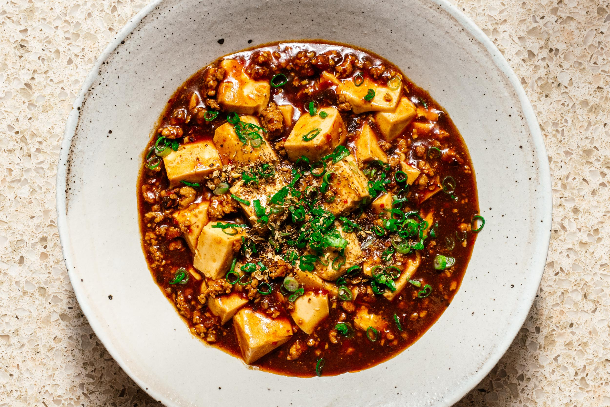

|  | Ma Po Tofu（麻婆豆腐） | Ma Po Tofu is one of the most famous dishes in Chuan Cuisine with a history of more than 100 years. Ma (麻) describes a spicy and hot taste which comes from pepper powder, one kind of condiment usually used in Chuan Cuisine. The milky tofu is enriched with brownish pork and chopped green onion. It is really a tasty delicacy. |